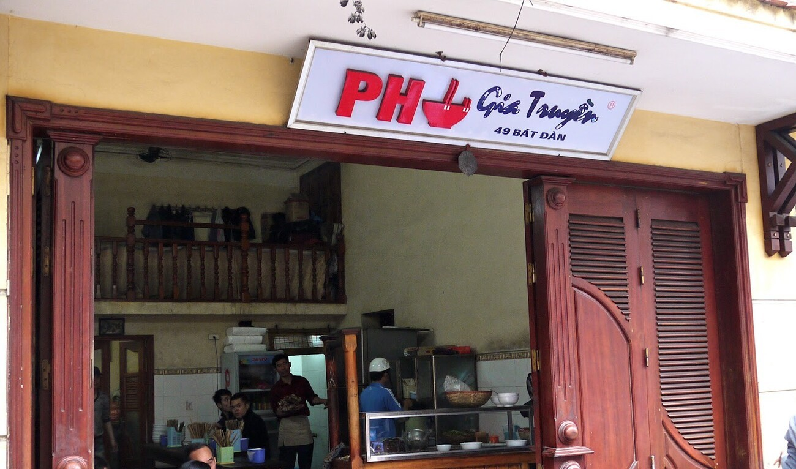
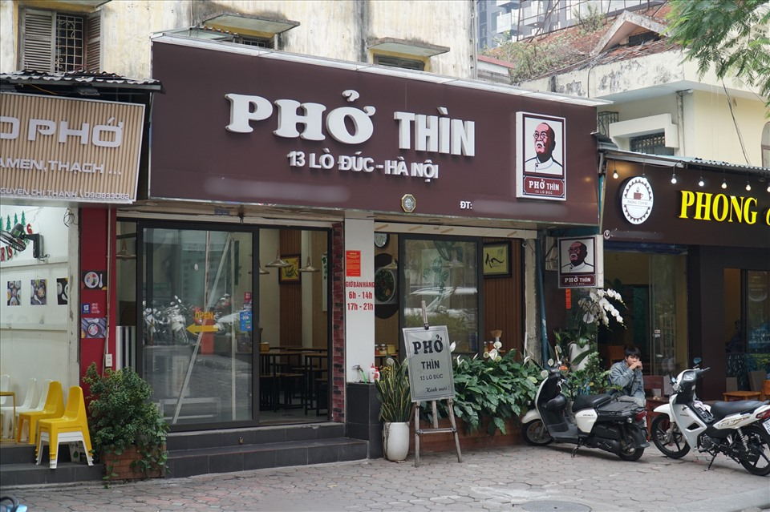
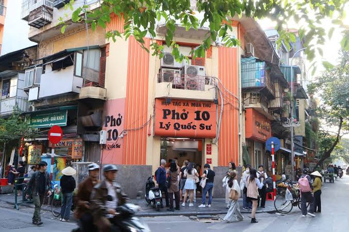
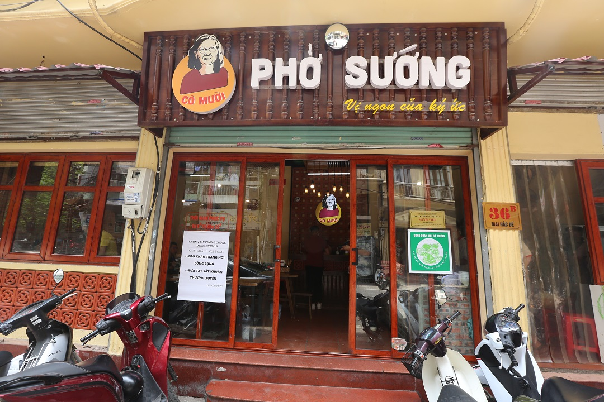
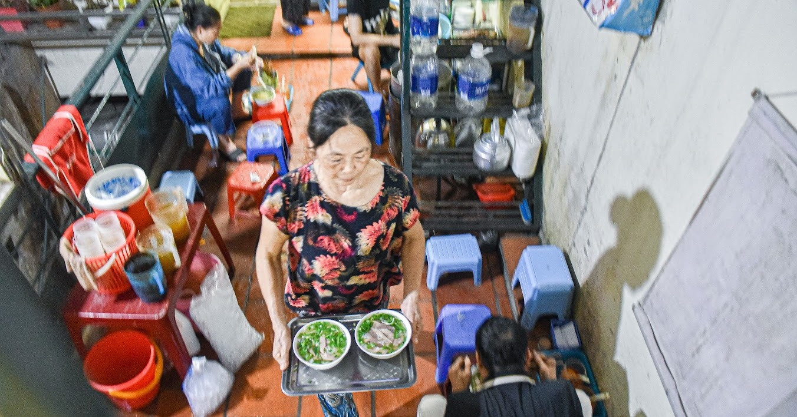

🥢 1. Phở Gia Truyền Bát Đàn
📍 49 Bát Đàn, Hoàn Kiếm, Hà Nội
Quán phở gia truyền lâu năm tại khu phố cổ, nổi tiếng với phở bò truyền thống.
⭐ Đặc trưng: Phở bò tái, chín, tái nạm
Khám phá những địa chỉ phở quen thuộc của Thủ đô

📍 49 Bát Đàn, Hoàn Kiếm, Hà Nội
Quán phở gia truyền lâu năm tại khu phố cổ, nổi tiếng với phở bò truyền thống.
⭐ Đặc trưng: Phở bò tái, chín, tái nạm

📍 13 Lò Đúc, Hai Bà Trưng, Hà Nội
Một địa chỉ phở lâu năm, nổi bật với cách chế biến thịt bò tái lăn.
⭐ Đặc trưng: Phở bò tái lăn nhiều hành

📍 10 Lý Quốc Sư, Hoàn Kiếm, Hà Nội
Quán phở nổi tiếng ở khu vực phố cổ, phục vụ nhiều lựa chọn phở bò.
⭐ Đặc trưng: Phở bò tái, chín, nạm, gầu

📍 24B Ngõ Trung Yên, Hoàn Kiếm, Hà Nội
Quán nằm trong khu phố cổ, được biết đến với các món phở bò truyền thống.
⭐ Đặc trưng: Phở bò và phở sốt vang

📍 Khu vực Hàng Trống, Hoàn Kiếm, Hà Nội
Một nét ăn phở đặc biệt của khu phố cổ Hà Nội, gắn với cách thưởng thức phở khá độc đáo.
⭐ Đặc trưng: Phở bưng truyền thống